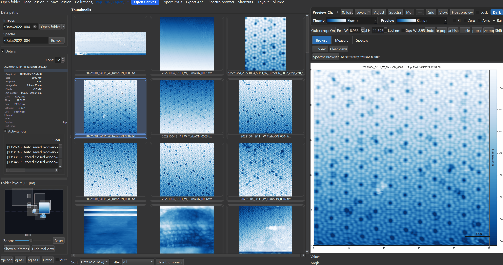

Filters & Processing

SXM Viewer ships a fixed set of 10 named image filters, applied non-destructively - the original data is always preserved, and a processed view is stored alongside it.
Applying a single filter
Right-click the preview or a pop-out -> Filters submenu, or use the thumbnail context menu for batch application to selected thumbnails. The submenu shows a "Current: ..." status line describing any pipeline already active on that image, then all 10 filters individually (each opens its own small parameter dialog before applying), then Custom pipeline... and Clear filter.
Clicking a filter adds a step - it doesn't replace the current one
If a filter is already active, clicking another filter from this menu appends it as a new pipeline step rather than replacing the existing one (the menu even relabels itself "Add step: ..." once something is active). Applying Laplacian, then later applying Low-pass from the same menu, leaves you with a two-step Laplacian-then-Low-pass pipeline, not a low-pass-only result. Use Clear filter first if you want to start over with a single filter instead of stacking.
Available filters
| Filter | What it does | Parameters |
|---|---|---|
| Flatten (row/col median) | Subtracts the per-row and/or per-column median to remove offset/striping | Axis: both / row / col |
| Tilt correction (plane) | Subtracts a best-fit 1st-order plane (ax+by+c) |
none |
| Global plane fit (2nd order) | Subtracts a best-fit 2nd-order surface (ax²+by²+cxy+dx+ey+f) |
none |
| Line-by-line flatten | The standard STM fix for row-to-row "sawtooth"/1/f-noise stripe artifacts | Axis: row / col / both; Method: median / mean / poly1 / poly2 |
| High-pass (Gaussian) | Removes low-frequency background, keeping fine detail | Sigma |
| Low-pass (Gaussian) | Smooths/denoises by removing high-frequency detail | Sigma |
| Laplacian | Highlights edges and fine surface features via the second spatial derivative | Sigma (pre-smoothing); Stencil (4- or 8-neighbor); Absolute response (|∇²f| vs. signed) |
| Logarithmic (dynamic range) | Compresses a wide dynamic range so faint and strong features are both visible | Epsilon (offset, as a fraction of the data range) |
| Histogram equalization | Redistributes intensities for maximum contrast | none |
| CLAHE (adaptive equalization) | Localized, tile-based histogram equalization - requires scikit-image | Clip limit (0.001-0.5); Tile size (4/8/16/32) |
High-pass and Low-pass are greyed out with an explanatory tooltip if no Gaussian backend (SciPy/OpenCV) is available. Laplacian's optional pre-smoothing silently skips smoothing instead of warning you if no backend is present - if edge highlighting looks unexpectedly sharp, this may be why.
Only Low-pass, High-pass, and Laplacian remember their last-used parameters across sessions. The other seven filters always reopen with their default parameters.
Custom pipeline
Filters -> Custom pipeline... opens a dialog to chain multiple filter steps into a single processing pipeline, previewed before committing.
Not every filter has adjustable parameters here
The Custom pipeline dialog currently only exposes parameter controls for Flatten, High-pass, Low-pass, and Laplacian. Adding any of the other six filters (Tilt correction, Global plane fit, Line-by-line flatten, Logarithmic, Histogram equalization, CLAHE) as a pipeline step uses their hard-coded defaults (e.g. CLAHE always applies clip limit 0.03 / tile size 8) with no way to adjust them in this dialog. If you need non-default parameters for one of those six, apply it individually first via the single-filter menu (which does have full parameter controls), then build the rest of the pipeline around it.
There is currently no way to save a custom pipeline as a named, reusable preset - the "Name prefix" field in this dialog is a cosmetic label shown in the pipeline summary and thumbnail badge, not a saved preset you can recall later for a different image.
Every filter step - whether from the quick menu or the custom pipeline - runs only over the automatically-detected valid scan region, leaving invalid border rows (common on aborted or partial scans) untouched.
Applying filters to multiple images
Select several thumbnails (Shift+Click, Ctrl+Click, or drag rubber-band) then right-click -> Filters to batch-process all selected images with the same filter and parameters. The context menu gains a Clear filter (selected) action when multiple thumbnails are selected.
Undo works differently here
Ctrl+Z undoes a filter step when it was applied through the preview/pop-out canvas's own Filters menu. Batch-applying a filter from the thumbnail context menu does not push anything onto that undo stack - to remove it, use Clear filter / Clear filter (selected) instead of Ctrl+Z.
Filters and the rest of the workspace
- A small "Filter: ..." badge appears in the corner of a filtered view whenever a pipeline is active, so it's always visible which images have processing applied.
- Filter state is saved with sessions, so reopening a session restores every image's filter pipeline exactly as it was.
- Applying or changing a filter automatically recomputes the display contrast range for the new, filtered data - see Histogram & Contrast for how this interacts with a manually-set histogram range.